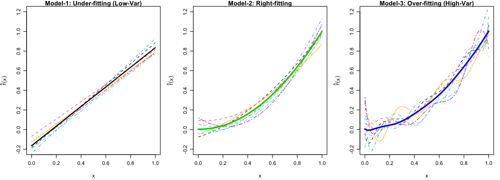

Homework 1 - Bias-Variance Tradeoff and Linear Regression
Due Friday, Feb 9 11:59 PM
Please submit your work in one PDF file to D2L > Assessments > Dropbox. Multiple files or a file that is not in pdf format are not allowed.
Any relevant code should be attached.
Read ISL Chapter 2 and 3.
Homework Questions
- ISL Sec. 2.4: 3
ISL Sec. 2.4: 6
ISL Sec. 3.7: 4
ISL Sec. 3.7: 5
ISL Sec. 3.7: 6
ISL Sec. 3.7: 14
Simulation of bias-variance tradeoff. Let \(f(x) = x ^ 2\) be the true regression function. Simulate the data using \(y_i = f(x_i) + \epsilon_i, i = 1, \dots, 100\), where \(x_i = 0.01i\) and \(\epsilon_i \stackrel{iid} \sim N(0, 0.3^2).\)
- Generate 250 training data sets.
- For each data set, fit the following three models:
- Model 1: \(y = \beta_0+\beta_1x+\epsilon\)
- Model 2: \(y = \beta_0+\beta_1x+ \beta_2x^2 + \epsilon\)
- Model 3: \(y = \beta_0+\beta_1x+ \beta_2x^2 + \cdots + \beta_9x^9 + \epsilon\)
- Calculate empirical MSE of \(\hat{f}\), bias of \(\hat{f}\) and variance of \(\hat{f}\). Then show that \[\text{MSE}_{\hat{f}} \approx \text{Bias}^2(\hat{f}) + \mathrm{Var}(\hat{f}).\] Specifically, for each value of \(x_i\), \(i = 1, \dots, 100\),
\[\text{MSE}_{\hat{f}} = \frac{1}{250}\sum_{k=1}^{250} \left(\hat{f}_k(x_i) - f(x_i) \right) ^2,\] \[\text{Bias}(\hat{f}) = \overline{\hat{f}}(x_i) - f(x_i),\] where \(\overline{\hat{f}}(x_i) = \frac{1}{250}\sum_{k = 1}^{250}\hat{f}_k(x_i)\) is the sample mean of \(\hat{f}(x_i)\) that approximates \(\mathrm{E}_{\hat{f}}\left(\hat{f}(x_i)\right).\) \[ \mathrm{Var}(\hat{f}) = \frac{1}{250}\sum_{k=1}^{250} \left(\hat{f}_k(x_i) - \overline{\hat{f}}(x_i) \right) ^2.\] [Note:] If you calculate the variance using the built-in function such as
var()in R, the identity holds only approximately because of the \(250 - 1\) term in the denominator in the sample variance formula. If instead \(250\) is used in the denominator, the identity holds exactly.- For each model, plot first ten estimated \(f\), \(\hat{f}_{1}(x), \dots, \hat{f}_{10}(x)\), and the average of \(\hat{f}\), \(\frac{1}{250}\sum_{k=1}^{250}\hat{f}_{k}(x)\) in one figure, as Figure 1 below. What’s your finding?
- Generate one more data set and use it as the test data. Calculate the overall training MSE (for training \(y\)) and overall test MSE (for test \(y\)) for each model. \[MSE_\texttt{Tr} = \frac{1}{250} \sum_{k = 1}^{250} \frac{1}{100} \sum_{i=1}^{100} \left(\hat{f}_{k}(x_i) - y_{i}^k\right)^2\] \[MSE_\texttt{Te} = \frac{1}{250} \sum_{k = 1}^{250} \frac{1}{100} \sum_{i=1}^{100} \left(\hat{f}_{k}(x_i) - y_{i}^{\texttt{Test}}\right)^2\]
- Gradient descent. Write your own gradient descent algorithm for linear regression. Implement it and compare with the built-in function such as
optim()to make sure that it converges correctly.